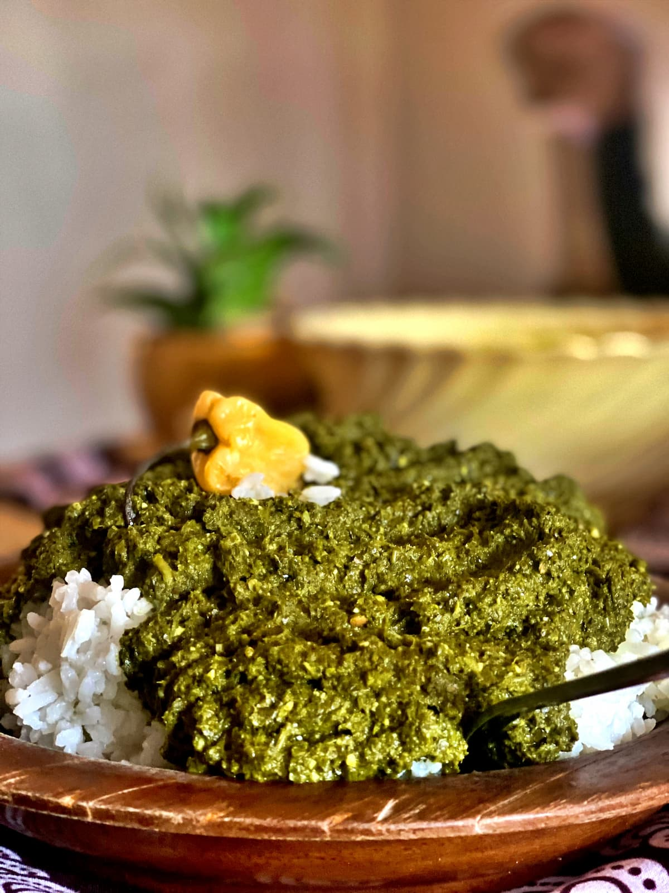

Isombe

Isombe is a traditional Rwandan dish made from pounded cassava leaves. The leaves are cooked slowly with onions, garlic, and palm oil until soft and rich. It is often served with rice, plantain, or cassava at family meals and gatherings.
Ingredients
- 500 g pounded cassava leaves
- 1 onion, chopped
- 3 cloves of garlic, crushed
- 2 tablespoons of palm oil
- 3 tablespoons of groundnut (peanut) paste
- Salt, to taste
Cooking Instructions
- Boil the pounded cassava leaves in water until soft, then drain.
- Fry the onion and garlic in palm oil until golden.
- Add the cassava leaves and stir in the groundnut paste.
- Simmer on low heat, stirring often, until thick and well cooked.
- Add salt to taste and serve hot with rice or plantain.